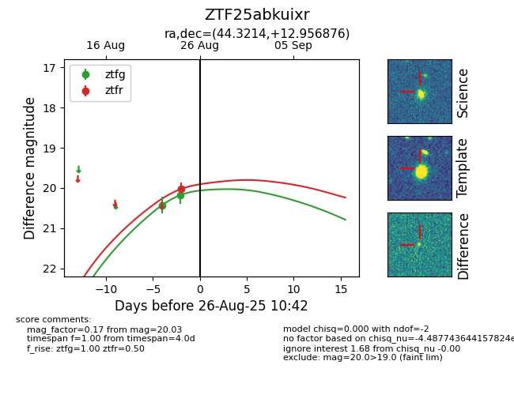

Target ZTF25abkuixr at 2025-08-26 10:53, see:
FINK: fink-portal.org/ZTF25abkuixr
Lasair: lasair-ztf.lsst.ac.uk/objects/ZTF25abkuixr
ALeRCE: alerce.online/object/ZTF25abkuixr
alt names
ZTF25abkuixr (ztf,fink)
coordinates:
equatorial (ra, dec) = (44.3214,+12.95688)
galactic (l, b) = (164.2506,-39.61162)
photometry
last ztfg=20.17, ztfr=20.03
2 ztfg, 1 ztfr detections
